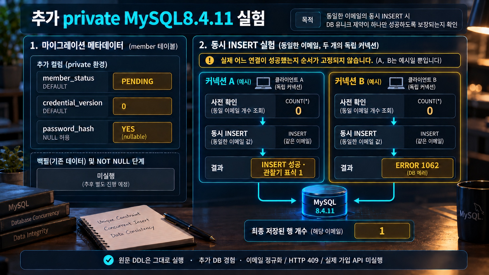

계정 생명주기 · 코드·소비·공유 카운터
사전 중복 조회를 통과하면 가입이 보장될까요?
원문 Java는 direct new로, 부분 코드는 추가 wrapper로 실행했습니다. Java21·private MySQL8.4.11·Redis8.10.2 관측이며 API·Spring proxy·로그인·JWT filter·실제 메일/SMS·Java25는 미실행입니다.
원문 코드 + 명시한 추가 Java·Redis·MySQL 관측
원문 migration은 외부 연습 schema 사본에 적용했습니다. 가입 경합은 추가 두 연결·같은 literal email이며 정규화·API409 구현은 없습니다.
원문 DDL의 초기 상태
PENDING 기본값과 nullable password_hash를 추가했습니다. 기존 hash 채움과 NOT NULL 전환은 실행하지 않았습니다.

지금의 객체·저장 상태·독립 관찰값
함께 읽을 코드
원문과 추가 실험의 코드 발췌입니다. 강조는 설명하는 위치이며 실시간 실행 줄이 아닙니다.
값은 각 관측 시점의 기록입니다. 코드 강조는 설명 위치이며 실시간 실행 줄이 아닙니다.
추가 실행 검증 로그 보기
최종 frozen 실제 JSON/PASS 발췌입니다. Java10·Redis9·MySQL14의 고유 CHECK33개는 서로 연결된 검증이며 독립33실험이 아닙니다. 공개 demo key·고정 시계·결정적 난수로 재현했으며 보안 인증이나 시간 동등성 측정이 아닙니다.
원문·추가 실험 전체 코드와 실제 검증 근거
원문301줄/7fence와 본문은 보존했습니다. 완전한 Java2개는 그대로 컴파일해 직접 new로 호출했고 reset/Redis 부분코드2개는 추가 wrapper에 원문 내용을 그대로 넣었습니다. Kotlin build·properties·Java25·Boot 앱·HTTP를 전부 실행한 것이 아닙니다. 실제 JDK21.0.6·Spring7.0.9·Security Crypto7.1.1·DataRedis4.1.1·Lettuce7.5.2.RELEASE/BOM4.1.1이며 runtimeClasspath53 artifact의 SHA를 기록했습니다.
fixed Clock·deterministic SecureRandom·공개 demo key·메모리 store/sender를 추가했습니다. 코드6자리·앞자리0/5분·MAC64 hex, HMAC 고정 벡터·추가 byte 비교를 확인했습니다. 실제 provider 발송·쿨다운/일일/IP 정책·Spring proxy·DB 저장·운영 난수 품질을 증명하지 않습니다. MessageDigest.isEqual 결과와 상수시간 측정은 다르며 timing은 미측정입니다. 추가 SQL의 MAC equality도 상수시간 검증이 아닙니다.
원문 issue의 limit→replace→email 호출 순서와 추가 sender 실패 뒤 memory write1을 관찰했습니다. DB commit/rollback이나 outbox 구현 결과가 아닙니다. reset 부분코드는32 고정 demo bytes→Base64URL43자/padding 없음→digest32byte·15분·메일 stub1입니다. 실제 token·key·암호·발송 링크는 화면에 기록하지 않습니다. API201/202/204/409/429/423·Retry-After는 원문 계약이며 HTTP·처리시간 동등성을 실행한 결과가 아닙니다.
공식 Redis8.10.2 tar의 SHA-256을 공식 hash 목록과 대조했고 연구 폴더에서만 local make로 빌드했습니다. urllib403 뒤 같은 공식 URL의 curl 접근은 성공했습니다. 전역 install·기존 Redis/Docker·서비스 설정을 변경하지 않았습니다. 새0700 dir/socket·새 loopback port·자체PID·protected mode·매회 새 requirepass·persistence OFF를 CONFIG/INFO로 guard했습니다. 암호는 로그/CLI 인수/Git에 넣지 않았습니다. 임시 config는 private0700 run의0600 파일입니다.
독립 Lettuce client2개/worker thread2개가 동일 key를30회씩 호출했습니다. 서로 다른 clientID·결과 집합1..60·고유60·최종60입니다. 앱/프로세스2개·실제 로그인 요청이 아닙니다. 최초1/둘째2에서 절대 만료 시각이 같아 fixed window이며 sliding 갱신이 아닙니다. local30+30에서60 허용/shared count≤40에서40 허용은 추가 판단 계산입니다. 원문 Lua 자체는 count만 반환하고 HTTP limiter를 구현하지 않습니다.
의도적으로 INCR만 보내고 EXPIRE를 생략하면 count1/TTL-1입니다. 원문 Lua에 추가 invalid expiry를 주면 오류 뒤에도 count1/TTL-1이 남았습니다. atomic은 명령 끼어듦 방지이며 오류 전체 rollback이 아닙니다. 원문 Duration999ms.toSeconds()는0이라 EXPIRE0으로 두 호출이1,1·키 없음이었습니다. 양의 whole-second 설정 검증은 원문에 없습니다. 별도1초 window의 실제 만료/다음1도 확인했습니다. 실제 TTL/절대 epoch/clientID는 run별 raw 자료이며 canonical은 범위·동등 비교값만 보존했습니다.4개 longliving key와 short key를 정리하고 DBSIZE0·서버 정상 종료/TCP 닫힘을 확인했습니다. 속도·메모리·공격 방어 성능은 미측정입니다.
MySQL8.4.11은 0700 run 아래 새 datadir(실측0750)·0700 socket 디렉터리·자체PID·skipNetworking1/port0/mysqlxOFF의 socket-only 서버였습니다. 외부 study schema/seed SHA 사본과 원문 migration을 guard 뒤에만 적재했습니다. 관찰 계정은 private ds_practice의 SELECT/INSERT/UPDATE/DELETE만 가지며 root는 private bootstrap/shutdown용입니다. 기존DB/3306·학습자 데이터·설정은 사용하지 않았습니다. password_hash backfill/NOT NULL 전환은 미실행입니다.
추가 가입 두 연결의 사전 조회0/0 뒤 INSERT는 성공1·MySQL1062/저장1이었습니다. 이메일 정규화·HTTP409 검증이 아닙니다. 추가 email-only 정책에서 member_id가 맞는 consume1일 때만 ACTIVE를 갱신했고, 독립 observer는 commit전 PENDING/뒤 ACTIVE·재사용0을 봤습니다. 같은 challenge 동시 소비는 영향[0,1], 만료 경계/한도3은0입니다. owner 불일치·만료 활성화도각0·회원 둘 다 PENDING을 확인했습니다. 원문의 실제 가입/인증 store가 구현됐다는 뜻은 아닙니다.
추가 실패 increment를 rollback하면0, 별도 세 commit 뒤 attempts3/정답 소비0이었습니다. 순차 재전송은 한 TX에서 old11 삭제1/new12 삽입 후 old 소비0/new1입니다. 동시 재전송이나 실제 제한 정책은 미검증입니다. 이러한 조건부 SQL과 숫자3은 추가 fixture입니다.
추가 reset helper는 token/member_id를 함께 검사합니다. 다른 owner면 영향0·양쪽 상태 불변입니다. 같은 DB에서 token 소비·상징적 demo-hash-v1/v2·credential_version·b01_session·b01_audit를 묶었습니다. 중간 실패 rollback은 v1/version0/tokenUsed0/session2/unusedReset2/audit0, commit은 v2/version1/tokenUsed1/session0/unusedReset0/audit1·재사용0입니다. 같은 token 동시 두 연결도[0,1]/version1입니다. 실제 PasswordEncoder 해시의 DB 저장·외부 session/Redis/JWT 폐기가 아닙니다. Java standalone encoder의 {bcrypt}/matches true·false와 추가 정수 version0/1 비교는 별개이며 JWT parsing/signature/filter를 실행하지 않았습니다.
Java10/Redis9/MySQL14 고유 ASSERT33은 서로 연결된 관찰 단위이며33개 독립 보안 시험이 아닙니다. 최종 main freeze/새 replay·독립 temp 실행에서 전체 JSON·53dependency SHA·정상 종료가 일치했습니다. 추가 관찰기의 CLIENT ID 정수 decoder 오류는 typed API와 추가 read-only expiry Lua로 교정했으며 원문 Lua는 바꾸지 않았습니다. Netty macOS DNS native provider 경고는 loopback IP 직결 시험과 구분하고 시스템 설정은 바꾸지 않았습니다.
실제 인증/인가·세션/JWT middleware·메일/SMS/SMTP·IP/proxy·정규화·시간 동등성·외부 저장소와의 분산 원자성/outbox·MFA/risk·보안/성능 인증·Docker·Java25·전수 픽셀/학습자 이해도는 미검증입니다. 처음 추가한31개 집합과 guard negative2개를 더한 최종33개 집합은 checkpoint에서 구분합니다.
원문 SHA·외부 schema 사본·실행 범위
{
"source": "docs/knowledge/B01-account-lifecycle.md",
"sha256": "1c77c1d160fcffaf98c352787ba4df445d9f1d782369b0101a3acd508e5e8576",
"lines": 301,
"originalBlocks": [
{
"block": 1,
"language": "kotlin",
"file": "block-01.kts",
"sha256": "16725a0009c5c8040ffa97250ca7bbd6273185a5ea406857cad30b7c41a98f48"
},
{
"block": 2,
"language": "properties",
"file": "block-02.properties",
"sha256": "43de296bef89ee7b554a2354fa3aeedf8ca8d9b7be15cab35aed0afce3143c65"
},
{
"block": 3,
"language": "sql",
"file": "block-03.sql",
"sha256": "636f512d407e95da2a830aea5856da3e673f0e1596a96917afb8693c3d87f6d2"
},
{
"block": 4,
"language": "java",
"file": "block-04.java",
"sha256": "948db4ee8e21945ce2a7e7c4c2eeee9d47ea5c285cfa8d591ba22062e4ce0ce2"
},
{
"block": 5,
"language": "java",
"file": "block-05.java",
"sha256": "64fc169a01e30eaa4fb05bad46749ca9c955c583d65df9f59f70feb6c4199ddf"
},
{
"block": 6,
"language": "java",
"file": "block-06.java",
"sha256": "a651427421e6b72e18e5610e2e55cbfdf787da1a71b32b9036aeaf25cedf925c"
},
{
"block": 7,
"language": "java",
"file": "block-07.java",
"sha256": "553062bd092e7772e430e66134fa1e442125a5d6ce33cf329df8bdbd03d23a9c"
}
],
"status": "source completeJava2 unchanged+partialJava2 inextra wrappers; sourceDDLprivatecopy; Java10/Redis9/MySQL14 unique33/mainfreshreplay+independentwholefrozenmatch; actualAPI/mail/SMS/JWT/Java25 unrun",
"externalStudyData": [
{
"source": "LOCAL_HOME/research/java-spring/practice/schema/schema.sql",
"copy": "original/external-study-schema.sql",
"sha256": "9d3b0ee42b1206168776ea776804266227fe8c0da845c6e227a1a7184ce8029a"
},
{
"source": "LOCAL_HOME/research/java-spring/practice/schema/seed.sql",
"copy": "original/external-study-seed.sql",
"sha256": "351eff76376265f524c2da9d78d019176f4379fc0095f2e326f213d4aec71a56"
}
]
}실제 Java/Redis/MySQL 관찰33개
{
"crypto": {
"runtime": {
"javaVersion": "21.0.6",
"springVersion": "7.0.9",
"securityCryptoVersion": "7.1.1"
},
"checks": [
"extra-mac-byte-comparison",
"extra-password-encoder-delegating-matches",
"extra-version-comparison-is-not-jwt-revocation",
"observer-record-time-deep-snapshot",
"source-codemac-known-vector",
"source-issue-fixed-clock-memory-email",
"source-issue-memory-sms-six-digits",
"source-limit-stub-stops-before-replace",
"source-reset-fragment-extra-wrapper",
"source-sender-failure-after-memory-store-write"
],
"facts": {
"extra-mac-byte-comparison": {
"equalInputMatches": true,
"changedInputMatches": false,
"digestBytes": 32,
"scope": "extra MessageDigest.isEqual call; timing not measured; original verifier absent"
},
"extra-password-encoder-delegating-matches": {
"factory": "PasswordEncoderFactories.createDelegatingPasswordEncoder",
"securityVersion": "7.1.1",
"storedPrefix": "{bcrypt}",
"correctMatches": true,
"wrongMatches": false,
"scope": "extra standalone encoder call; no login handler/HTTP/cost benchmark"
},
"extra-version-comparison-is-not-jwt-revocation": {
"issuedVersion": 0,
"currentVersion": 1,
"extraVersionCheckAccepts": false,
"scope": "extra integer comparison; no JWT parse/signature/filter/session authentication"
},
"observer-record-time-deep-snapshot": {
"recordTimeOrderSize": 3,
"sourceTraceAfterClear": 0
},
"source-codemac-known-vector": {
"algorithm": "HmacSHA256",
"hexCharacters": 64,
"knownVectorMatches": true,
"scope": "public fixed test input; no production key"
},
"source-issue-fixed-clock-memory-email": {
"order": [
"limit",
"replace",
"email"
],
"codeDigits": 6,
"leadingZeroPreserved": true,
"storedMacCharacters": 64,
"issuedAt": "2026-10-20T00:00:00Z",
"expiresAt": "2026-10-20T00:05:00Z",
"ttlSeconds": 300,
"emailStubCalls": 1,
"scope": "direct new source service; extra memory store/sender; not DB/Spring proxy/email delivery"
},
"source-issue-memory-sms-six-digits": {
"order": [
"limit",
"replace",
"sms"
],
"codeDigits": 6,
"digitsOnly": true,
"smsStubCalls": 1,
"scope": "SMS branch only; no provider/network/delivery"
},
"source-limit-stub-stops-before-replace": {
"order": [
"limit"
],
"rejectedByStub": true,
"newStoreWrites": 0,
"scope": "extra limit stub; real cooldown/day/IP policy absent"
},
"source-reset-fragment-extra-wrapper": {
"randomInputBytes": 32,
"base64urlCharacters": 43,
"paddingPresent": false,
"storedDigestBytes": 32,
"sentValueHashesToStoredDigest": true,
"expiresAt": "2026-10-20T00:15:00Z",
"ttlSeconds": 900,
"mailStubCalls": 1,
"scope": "original fragment inside extra wrapper; deterministic demo bytes, no actual link or mail"
},
"source-sender-failure-after-memory-store-write": {
"order": [
"limit",
"replace",
"email"
],
"senderFailure": true,
"memoryStoreWrites": 1,
"scope": "added memory store not DB commit; source outbox/retry implementation absent"
}
}
},
"redis": {
"checks": [
"extra-local-vs-shared-threshold40",
"extra-lua-runtime-error-does-not-undo-incr",
"extra-split-incr-without-expire-leaves-key",
"private-redis-probe-keys-explicit-cleanup",
"private-redis-two-independent-clients",
"source-lua-expiry-next-window-starts-one",
"source-lua-first-expiry-fixed-window",
"source-lua-two-client-shared-count60",
"source-subsecond-window-truncates-to-zero"
],
"facts": {
"extra-local-vs-shared-threshold40": {
"addedThreshold": 40,
"separateLocalCounts": [
30,
30
],
"localCountsWouldPermit": 60,
"sharedCountWouldPermit": 40,
"scope": "extra decision calculation; original Lua only returns count, no HTTP limiter implemented"
},
"extra-lua-runtime-error-does-not-undo-incr": {
"runtimeError": true,
"countAfterError": 1,
"ttlAfterError": -1,
"scope": "same source Lua with extra invalid expiry argument; atomic is not error rollback"
},
"extra-split-incr-without-expire-leaves-key": {
"count": 1,
"ttl": -1,
"scope": "deliberately stop after INCR; EXPIRE not sent; not process crash test"
},
"private-redis-probe-keys-explicit-cleanup": {
"deletedLongLivingKeys": 4,
"remainingProbeKeys": 0
},
"private-redis-two-independent-clients": {
"redisVersion": "8.10.2",
"differentClientIds": true,
"scope": "new loopback/password/ownPID guard; not existing Redis"
},
"source-lua-expiry-next-window-starts-one": {
"firstWindowCount": 1,
"expiredKeyAbsent": true,
"nextWindowCount": 1,
"scope": "actual TTL wait bounded4s; no latency or throughput claim"
},
"source-lua-first-expiry-fixed-window": {
"first": 1,
"second": 2,
"sameAbsoluteExpiry": true,
"positiveTtlWithin60s": true,
"scope": "first request expiry not sliding refresh; raw expiry perrun only"
},
"source-lua-two-client-shared-count60": {
"callsPerClient": [
30,
30
],
"uniqueResults": 60,
"resultMin": 1,
"resultMax": 60,
"finalSharedCount": 60,
"scope": "two independent clients/workerthreads same key, not production app nodes/HTTP"
},
"source-subsecond-window-truncates-to-zero": {
"inputMillis": 999,
"windowToSeconds": 0,
"returns": [
1,
1
],
"keyExists": false,
"scope": "source lacks positive whole-second config validation; not 999ms rate protection"
}
}
},
"mysql": {
"checks": [
"extra-activation-requires-matching-live-challenge",
"extra-challenge-concurrent-consume-one-winner",
"extra-consume-activation-commit-observer",
"extra-expiry-boundary-and-attempt-limit",
"extra-failure-counter-needs-commit",
"extra-reset-commit-hash-version-sessions-tokens",
"extra-reset-concurrent-one-version-increment",
"extra-reset-mid-failure-rolls-back-all",
"extra-reset-token-owner-mismatch-no-write",
"extra-sequential-resend-replaces-old-challenge",
"extra-signup-two-prechecks-unique-one-winner",
"private-account-fixtures-cleaned-seed-count-kept",
"private-native-mysql-socket-only",
"source-migration-applied-private-copy"
],
"facts": {
"private-native-mysql-socket-only": {
"version": "8.4.11",
"skipNetworking": true,
"mysqlx": false,
"scope": "fresh datadir/socket/ownPID; application probe CRUD only"
},
"source-migration-applied-private-copy": {
"columns": [
{
"COLUMN_NAME": "credential_version",
"IS_NULLABLE": "NO",
"COLUMN_DEFAULT": "0"
},
{
"COLUMN_NAME": "member_status",
"IS_NULLABLE": "NO",
"COLUMN_DEFAULT": "PENDING"
},
{
"COLUMN_NAME": "password_hash",
"IS_NULLABLE": "YES",
"COLUMN_DEFAULT": null
}
],
"scope": "original DDL unchanged; existing hash backfill/NOT NULL step not executed"
},
"extra-signup-two-prechecks-unique-one-winner": {
"precheckCounts": [
0,
0
],
"insertOutcomes": [
1,
1062
],
"storedRows": 1,
"scope": "two independent connections; same literal email; no normalization or HTTP409 implementation"
},
"extra-consume-activation-commit-observer": {
"consumeAffected": 1,
"independentBeforeCommit": "PENDING",
"independentAfterCommit": "ACTIVE",
"reuseAffected": 0,
"scope": "added email-only policy/direct SQL; source registration service absent"
},
"extra-activation-requires-matching-live-challenge": {
"wrongOwnerAffected": 0,
"expiredAffected": 0,
"memberStates": [
"PENDING",
"PENDING"
],
"scope": "added guarded helper; mismatched owner/expired paths do not activate; not HTTP auth"
},
"extra-challenge-concurrent-consume-one-winner": {
"affectedRows": [
0,
1
],
"scope": "two connections/same added conditional UPDATE"
},
"extra-expiry-boundary-and-attempt-limit": {
"expiresEqualsNowAffected": 0,
"attemptsAtLimitAffected": 0,
"addedMaxAttempts": 3,
"scope": "extra policy; not source store implementation"
},
"extra-failure-counter-needs-commit": {
"afterRolledBackWrongAttempt": 0,
"committedWrongAffected": [
1,
1,
1
],
"finalAttempts": 3,
"correctCodeAfterLimitAffected": 0,
"scope": "added direct SQL experiment; throwing+rollback would lose increment"
},
"extra-sequential-resend-replaces-old-challenge": {
"oldChallengeDeleted": 1,
"oldConsumeAffected": 0,
"newConsumeAffected": 1,
"scope": "added single transaction/sequential resend; concurrent resend not tested"
},
"extra-reset-token-owner-mismatch-no-write": {
"affected": 0,
"tokenOwnerUnchanged": true,
"requestedOwnerUnchanged": true,
"scope": "added token/member_id predicate; no HTTP handle/authentication tested"
},
"extra-reset-mid-failure-rolls-back-all": {
"before": {
"hashMarker": "demo-hash-v1",
"version": 0,
"tokenUsed": 0,
"sessionRows": 2,
"unusedResetRows": 2,
"auditRows": 0
},
"afterRollback": {
"hashMarker": "demo-hash-v1",
"version": 0,
"tokenUsed": 0,
"sessionRows": 2,
"unusedResetRows": 2,
"auditRows": 0
},
"scope": "added DB hash marker/session rows only; not external Redis/JWT revocation"
},
"extra-reset-commit-hash-version-sessions-tokens": {
"affected": 1,
"reuseAffected": 0,
"afterCommit": {
"hashMarker": "demo-hash-v2",
"version": 1,
"tokenUsed": 1,
"sessionRows": 0,
"unusedResetRows": 0,
"auditRows": 1
},
"scope": "symbolic demo hash marker; Java PasswordEncoder separate; same DB session table not real session/JWT validation"
},
"extra-reset-concurrent-one-version-increment": {
"affectedRows": [
0,
1
],
"after": {
"hashMarker": "demo-hash-v2",
"version": 1,
"tokenUsed": 1,
"sessionRows": 0,
"unusedResetRows": 0,
"auditRows": 1
},
"scope": "two connections same token; no HTTP status or timing test"
},
"private-account-fixtures-cleaned-seed-count-kept": {
"seedMemberCount": 200,
"afterMemberCount": 200,
"remainingFixtureRows": {
"b01_session": 0,
"b01_audit": 0,
"verification_challenge": 0,
"password_reset_token": 0
},
"scope": "rowcount only; copied migration remains private; not all seed values compared"
}
}
}
}검사 식별자33개
{
"groups": {
"crypto": [
"extra-mac-byte-comparison",
"extra-password-encoder-delegating-matches",
"extra-version-comparison-is-not-jwt-revocation",
"observer-record-time-deep-snapshot",
"source-codemac-known-vector",
"source-issue-fixed-clock-memory-email",
"source-issue-memory-sms-six-digits",
"source-limit-stub-stops-before-replace",
"source-reset-fragment-extra-wrapper",
"source-sender-failure-after-memory-store-write"
],
"redis": [
"extra-local-vs-shared-threshold40",
"extra-lua-runtime-error-does-not-undo-incr",
"extra-split-incr-without-expire-leaves-key",
"private-redis-probe-keys-explicit-cleanup",
"private-redis-two-independent-clients",
"source-lua-expiry-next-window-starts-one",
"source-lua-first-expiry-fixed-window",
"source-lua-two-client-shared-count60",
"source-subsecond-window-truncates-to-zero"
],
"mysql": [
"extra-activation-requires-matching-live-challenge",
"extra-challenge-concurrent-consume-one-winner",
"extra-consume-activation-commit-observer",
"extra-expiry-boundary-and-attempt-limit",
"extra-failure-counter-needs-commit",
"extra-reset-commit-hash-version-sessions-tokens",
"extra-reset-concurrent-one-version-increment",
"extra-reset-mid-failure-rolls-back-all",
"extra-reset-token-owner-mismatch-no-write",
"extra-sequential-resend-replaces-old-challenge",
"extra-signup-two-prechecks-unique-one-winner",
"private-account-fixtures-cleaned-seed-count-kept",
"private-native-mysql-socket-only",
"source-migration-applied-private-copy"
]
},
"unique": 33,
"units": "explicit ASSERT IDs; not33independentsecuritycases"
}원문 그대로 VerificationCodeService
package example.account;
import java.security.SecureRandom;
import java.time.Clock;
import java.time.Duration;
import java.time.Instant;
import java.util.Locale;
import org.springframework.stereotype.Service;
interface VerificationSender { void sendEmail(String address, String code); void sendSms(String e164, String code); }
interface VerificationChallengeStore {
void enforceCooldownAndDailyLimit(long id, String channel, Instant now);
void replaceActive(long id, String purpose, String channel, String mac, Instant now, Instant expires);
}
@Service
class VerificationCodeService {
private final SecureRandom random; private final Clock clock;
private final VerificationChallengeStore store; private final CodeMac codeMac;
private final VerificationSender sender;
VerificationCodeService(SecureRandom r, Clock c, VerificationChallengeStore s,
CodeMac m, VerificationSender out) {
random=r; clock=c; store=s; codeMac=m; sender=out;
}
void issue(long memberId, String purpose, String channel, String target) {
Instant now=clock.instant(); store.enforceCooldownAndDailyLimit(memberId,channel,now);
String code=String.format(Locale.ROOT,"%06d",random.nextInt(1_000_000));
store.replaceActive(memberId,purpose,channel,codeMac.mac(code),now,now.plus(Duration.ofMinutes(5)));
if (channel.equals("EMAIL")) sender.sendEmail(target,code); else sender.sendSms(target,code);
}
}
원문 그대로 CodeMac
package example.account;
import javax.crypto.Mac;
import javax.crypto.spec.SecretKeySpec;
import org.springframework.beans.factory.annotation.Value;
import org.springframework.stereotype.Component;
import java.nio.charset.StandardCharsets;
import java.util.HexFormat;
@Component
public class CodeMac {
private final byte[] key;
public CodeMac(@Value("${app.verification.pepper}") String pepper) { key=pepper.getBytes(StandardCharsets.UTF_8); }
public String mac(String code) {
try {
Mac mac=Mac.getInstance("HmacSHA256"); mac.init(new SecretKeySpec(key,"HmacSHA256"));
return HexFormat.of().formatHex(mac.doFinal(code.getBytes(StandardCharsets.US_ASCII)));
} catch (java.security.GeneralSecurityException e) {
throw new IllegalStateException("HMAC-SHA-256 unavailable", e);
}
}
}
추가 memory 관찰자·encoder·정수 비교
package example.account;
import java.nio.file.*;
import java.nio.charset.StandardCharsets;
import java.security.*;
import java.time.*;
import java.util.*;
import org.springframework.security.crypto.factory.PasswordEncoderFactories;
import tools.jackson.databind.json.JsonMapper;
/** 원문 서비스/CodeMac은 그대로 두고 추가 메모리 관찰자를 주입한다. */
public class B01Proof {
static final JsonMapper JSON=JsonMapper.builder().build();
static final Map<String,Object> facts=new TreeMap<>();
static final List<String> checks=new ArrayList<>();
static final Instant NOW=Instant.parse("2026-10-20T00:00:00Z");
static final Clock CLOCK=Clock.fixed(NOW,ZoneOffset.UTC);
static Map<String,Object> map(Object... pairs){var m=new LinkedHashMap<String,Object>();for(int i=0;i<pairs.length;i+=2)m.put((String)pairs[i],pairs[i+1]);return m;}
static void check(String id,boolean ok,Map<String,Object> value){if(!ok)throw new AssertionError(id);checks.add(id);facts.put(id,JSON.convertValue(value,Map.class));System.out.println("PASS "+id);}
static class DemoRandom extends SecureRandom {
final int value;DemoRandom(int n){value=n;}
@Override public int nextInt(int bound){if(value<0||value>=bound)throw new AssertionError("demo range");return value;}
@Override public void nextBytes(byte[] bytes){Arrays.fill(bytes,(byte)0x1a);}
}
static class Store implements VerificationChallengeStore {
final List<String> trace;String mac;Instant issued,expires;int writes;boolean reject;
Store(List<String> events){trace=events;}
public void enforceCooldownAndDailyLimit(long id,String channel,Instant now){trace.add("limit");if(reject)throw new IllegalStateException("demo cooldown");}
public void replaceActive(long id,String purpose,String channel,String value,Instant now,Instant until){trace.add("replace");mac=value;issued=now;expires=until;writes++;}
}
static class Sender implements VerificationSender {
final List<String> trace;String lastCode;int emails,sms;boolean fail;
Sender(List<String> events){trace=events;}
public void sendEmail(String address,String code){trace.add("email");lastCode=code;emails++;if(fail)throw new IllegalStateException("demo sender failure");}
public void sendSms(String address,String code){trace.add("sms");lastCode=code;sms++;}
}
public static void main(String[] args)throws Exception {
// 공개 재현용 테스트 키이며 실제 pepper/계정/토큰을 사용하지 않는다.
var mac=new CodeMac("public-b01-demo-key-not-a-production-secret");
String known=new CodeMac("\u000b".repeat(20)).mac("Hi There");
check("source-codemac-known-vector",known.equals("b0344c61d8db38535ca8afceaf0bf12b881dc200c9833da726e9376c2e32cff7"),map("algorithm","HmacSHA256","hexCharacters",known.length(),"knownVectorMatches",true,"scope","public fixed test input; no production key"));
byte[] a=HexFormat.of().parseHex(mac.mac("000042")),b=HexFormat.of().parseHex(mac.mac("000042")),c=HexFormat.of().parseHex(mac.mac("000043"));
check("extra-mac-byte-comparison",MessageDigest.isEqual(a,b)&&!MessageDigest.isEqual(a,c),map("equalInputMatches",true,"changedInputMatches",false,"digestBytes",a.length,"scope","extra MessageDigest.isEqual call; timing not measured; original verifier absent"));
var trace=new ArrayList<String>();var store=new Store(trace);var sender=new Sender(trace);
new VerificationCodeService(new DemoRandom(42),CLOCK,store,mac,sender).issue(90001,"SIGNUP","EMAIL","learner@example.invalid");
check("source-issue-fixed-clock-memory-email",trace.equals(List.of("limit","replace","email"))&&store.issued.equals(NOW)&&store.expires.equals(NOW.plusSeconds(300))&&sender.lastCode.equals("000042")&&store.mac.equals(mac.mac(sender.lastCode)),map("order",trace,"codeDigits",sender.lastCode.length(),"leadingZeroPreserved",sender.lastCode.startsWith("0"),"storedMacCharacters",store.mac.length(),"issuedAt",store.issued.toString(),"expiresAt",store.expires.toString(),"ttlSeconds",300,"emailStubCalls",sender.emails,"scope","direct new source service; extra memory store/sender; not DB/Spring proxy/email delivery"));
trace.clear();new VerificationCodeService(new DemoRandom(999999),CLOCK,store,mac,sender).issue(90001,"PHONE_CONFIRM","SMS","+12025550123");
check("source-issue-memory-sms-six-digits",trace.equals(List.of("limit","replace","sms"))&&sender.lastCode.length()==6&&sender.lastCode.chars().allMatch(Character::isDigit)&&sender.sms==1,map("order",trace,"codeDigits",6,"digitsOnly",true,"smsStubCalls",1,"scope","SMS branch only; no provider/network/delivery"));
trace.clear();store.reject=true;int before=store.writes;boolean rejected=false;
try{new VerificationCodeService(new DemoRandom(42),CLOCK,store,mac,sender).issue(90001,"SIGNUP","EMAIL","learner@example.invalid");}catch(IllegalStateException e){rejected=true;}
check("source-limit-stub-stops-before-replace",rejected&&trace.equals(List.of("limit"))&&store.writes==before,map("order",trace,"rejectedByStub",true,"newStoreWrites",store.writes-before,"scope","extra limit stub; real cooldown/day/IP policy absent"));
trace.clear();store.reject=false;sender.fail=true;before=store.writes;boolean sendFailed=false;
try{new VerificationCodeService(new DemoRandom(42),CLOCK,store,mac,sender).issue(90001,"SIGNUP","EMAIL","learner@example.invalid");}catch(IllegalStateException e){sendFailed=true;}
check("source-sender-failure-after-memory-store-write",sendFailed&&trace.equals(List.of("limit","replace","email"))&&store.writes==before+1,map("order",trace,"senderFailure",true,"memoryStoreWrites",1,"scope","added memory store not DB commit; source outbox/retry implementation absent"));
var reset=new ResetFragmentAdapter();var resetObservation=reset.issue(new DemoRandom(0),CLOCK);
check("source-reset-fragment-extra-wrapper",resetObservation.rawBytes()==32&&resetObservation.urlCharacters()==43&&resetObservation.digestBytes()==32&&resetObservation.digestMatches()&&resetObservation.expiresAt().equals(NOW.plusSeconds(900))&&resetObservation.mailStubCalls()==1,map("randomInputBytes",32,"base64urlCharacters",43,"paddingPresent",false,"storedDigestBytes",32,"sentValueHashesToStoredDigest",true,"expiresAt",resetObservation.expiresAt().toString(),"ttlSeconds",900,"mailStubCalls",1,"scope","original fragment inside extra wrapper; deterministic demo bytes, no actual link or mail"));
var encoder=PasswordEncoderFactories.createDelegatingPasswordEncoder();String encoded=encoder.encode("public-demo-password-not-a-real-account");
check("extra-password-encoder-delegating-matches",encoded.startsWith("{bcrypt}")&&encoder.matches("public-demo-password-not-a-real-account",encoded)&&!encoder.matches("public-demo-wrong-password",encoded),map("factory","PasswordEncoderFactories.createDelegatingPasswordEncoder","securityVersion",PasswordEncoderFactories.class.getPackage().getImplementationVersion(),"storedPrefix","{bcrypt}","correctMatches",true,"wrongMatches",false,"scope","extra standalone encoder call; no login handler/HTTP/cost benchmark"));
// 추가 version 값 비교일 뿐 실제 JWT 검증 필터가 아니다.
int issuedVersion=0,currentVersion=1;
check("extra-version-comparison-is-not-jwt-revocation",issuedVersion!=currentVersion,map("issuedVersion",issuedVersion,"currentVersion",currentVersion,"extraVersionCheckAccepts",false,"scope","extra integer comparison; no JWT parse/signature/filter/session authentication"));
trace.clear();
check("observer-record-time-deep-snapshot",((List<?>)((Map<?,?>)facts.get("source-issue-fixed-clock-memory-email")).get("order")).size()==3&&trace.isEmpty(),map("recordTimeOrderSize",3,"sourceTraceAfterClear",trace.size()));
var result=map("runtime",map("javaVersion",System.getProperty("java.version"),"springVersion",org.springframework.core.SpringVersion.getVersion(),"securityCryptoVersion",PasswordEncoderFactories.class.getPackage().getImplementationVersion()),"checks",checks.stream().sorted().toList(),"facts",facts);
Path target=Path.of(System.getenv().getOrDefault("B01_JAVA_OUTPUT","../java-execution.json"));Files.writeString(target,JSON.writerWithDefaultPrettyPrinter().writeValueAsString(result)+"\n");
}
}
원문 reset 부분코드를 넣은 추가 wrapper
package example.account;
import java.util.*;
import java.security.*;
import java.time.*;
import java.nio.charset.StandardCharsets;
/** 원문 reset 부분코드를 삽입하는 추가 메모리 adapter다. */
class ResetFragmentAdapter {
record Observation(int rawBytes,int urlCharacters,int digestBytes,boolean digestMatches,Instant expiresAt,int mailStubCalls){}
static class ResetStore {byte[] digest;Instant expires;void replacePrevious(long id,byte[] value,Instant end){digest=value.clone();expires=end;}}
static class Mailer {String token;int calls;void sendResetLink(String address,String value){token=value;calls++;}}
Observation issue(SecureRandom secureRandom,Clock clock)throws Exception {
long memberId=90001;String verifiedAddress="learner@example.invalid";
ResetStore resetStore=new ResetStore();Mailer mailer=new Mailer();
byte[] bytes = new byte[32];
secureRandom.nextBytes(bytes);
String rawToken = Base64.getUrlEncoder().withoutPadding().encodeToString(bytes);
byte[] digest = MessageDigest.getInstance("SHA-256")
.digest(rawToken.getBytes(StandardCharsets.US_ASCII));
resetStore.replacePrevious(memberId, digest, clock.instant().plus(Duration.ofMinutes(15)));
mailer.sendResetLink(verifiedAddress, rawToken); // rawToken은 URL 조립 직후 폐기, 로그 금지
return new Observation(bytes.length,rawToken.length(),resetStore.digest.length,
MessageDigest.isEqual(resetStore.digest,MessageDigest.getInstance("SHA-256").digest(mailer.token.getBytes(StandardCharsets.US_ASCII))),resetStore.expires,mailer.calls);
}
}
원문 Redis 부분코드를 넣은 추가 wrapper
package example.account;
import java.time.Duration;import java.util.List;
import org.springframework.data.redis.core.StringRedisTemplate;
import org.springframework.data.redis.core.script.DefaultRedisScript;
/** 원문 필드/메서드를 그대로 삽입하고 추가 Redis client만 주입한다. */
class SourceRedisAdapter {
final StringRedisTemplate redis;
SourceRedisAdapter(StringRedisTemplate value){redis=value;}
private static final DefaultRedisScript<Long> INCR_WINDOW =
new DefaultRedisScript<>("""
local n = redis.call('INCR', KEYS[1])
if n == 1 then redis.call('EXPIRE', KEYS[1], ARGV[1]) end
return n
""", Long.class);
long failed(String opaqueKey, Duration window) {
Long n = redis.execute(INCR_WINDOW, List.of(opaqueKey),
Long.toString(window.toSeconds()));
if (n == null) throw new IllegalStateException("rate counter unavailable");
return n;
}
long failWithInvalidExpiry(String key) {return redis.execute(INCR_WINDOW,List.of(key),"not-an-integer");}
}
추가 실제 두 Redis client·Lua 경계 관찰
package example.account;
import java.nio.file.*;import java.nio.charset.StandardCharsets;import java.time.Duration;import java.util.*;import java.util.concurrent.*;
import org.springframework.data.redis.connection.*;
import org.springframework.data.redis.connection.lettuce.LettuceConnectionFactory;
import org.springframework.data.redis.core.*;
import static example.account.B01Proof.*;
/** 두 독립 client가 새 private Redis에만 연결하는 추가 관찰자다. */
public class B01RedisProof {
static LettuceConnectionFactory factory(int port,String password){var c=new RedisStandaloneConfiguration("127.0.0.1",port);c.setPassword(password);var f=new LettuceConnectionFactory(c);f.afterPropertiesSet();f.start();return f;}
static StringRedisTemplate template(LettuceConnectionFactory f){var t=new StringRedisTemplate(f);t.afterPropertiesSet();return t;}
static long expiry(StringRedisTemplate t,String key){return t.execute(new org.springframework.data.redis.core.script.DefaultRedisScript<Long>("return redis.call('PEXPIRETIME',KEYS[1])",Long.class),List.of(key));}
public static void main(String[] args)throws Exception {
int port=Integer.parseInt(System.getenv("B01_REDIS_PORT"));String password=System.getenv("B01_REDIS_PASSWORD");
var fa=factory(port,password);var fb=factory(port,password);
try{
var a=template(fa);var b=template(fb);Properties info;
try(var c=fa.getConnection()){info=c.serverCommands().info("server");}
if(!info.getProperty("process_id").equals(System.getenv("B01_REDIS_PID"))||!info.getProperty("tcp_port").equals(Integer.toString(port)))throw new AssertionError("private Redis identity");
long clientA,clientB;
try(var ca=fa.getConnection();var cb=fb.getConnection()){
ca.serverCommands().setClientName("b01-client-a".getBytes(StandardCharsets.US_ASCII));cb.serverCommands().setClientName("b01-client-b".getBytes(StandardCharsets.US_ASCII));
var clients=ca.serverCommands().getClientList();clientA=Long.parseLong(clients.stream().filter(c->"b01-client-a".equals(c.getName())).findFirst().orElseThrow().get("id"));clientB=Long.parseLong(clients.stream().filter(c->"b01-client-b".equals(c.getName())).findFirst().orElseThrow().get("id"));
}
check("private-redis-two-independent-clients",clientA!=clientB,map("redisVersion",info.getProperty("redis_version"),"differentClientIds",true,"scope","new loopback/password/ownPID guard; not existing Redis"));
var aa=new SourceRedisAdapter(a);var bb=new SourceRedisAdapter(b);
long first=aa.failed("b01:fixed",Duration.ofSeconds(60));long expiry1=expiry(a,"b01:fixed");
long second=bb.failed("b01:fixed",Duration.ofSeconds(60));long expiry2=expiry(b,"b01:fixed");
long ttl=a.getExpire("b01:fixed",TimeUnit.MILLISECONDS);
check("source-lua-first-expiry-fixed-window",first==1&&second==2&&expiry1==expiry2&&ttl>0&&ttl<=60000,map("first",first,"second",second,"sameAbsoluteExpiry",true,"positiveTtlWithin60s",true,"scope","first request expiry not sliding refresh; raw expiry perrun only"));
Files.writeString(Path.of(System.getenv("B01_REDIS_RAW_OUTPUT")),JSON.writerWithDefaultPrettyPrinter().writeValueAsString(map("clientA",clientA,"clientB",clientB,"expiry1",expiry1,"expiry2",expiry2,"pttlObserved",ttl))+"\n");
var start=new CountDownLatch(1);var pool=Executors.newFixedThreadPool(2);
try{
Callable<List<Long>> nodeA=()->{start.await();var results=new ArrayList<Long>();for(int i=0;i<30;i++)results.add(aa.failed("b01:shared",Duration.ofSeconds(60)));return results;};
Callable<List<Long>> nodeB=()->{start.await();var results=new ArrayList<Long>();for(int i=0;i<30;i++)results.add(bb.failed("b01:shared",Duration.ofSeconds(60)));return results;};
var x=pool.submit(nodeA);var y=pool.submit(nodeB);start.countDown();var xa=x.get(10,TimeUnit.SECONDS);var xb=y.get(10,TimeUnit.SECONDS);var all=new ArrayList<Long>(xa);all.addAll(xb);all.sort(Long::compare);
var expected=new ArrayList<Long>();for(long i=1;i<=60;i++)expected.add(i);
check("source-lua-two-client-shared-count60",all.equals(expected)&&"60".equals(a.opsForValue().get("b01:shared")),map("callsPerClient",List.of(xa.size(),xb.size()),"uniqueResults",new HashSet<>(all).size(),"resultMin",all.getFirst(),"resultMax",all.getLast(),"finalSharedCount",60,"scope","two independent clients/workerthreads same key, not production app nodes/HTTP"));
check("extra-local-vs-shared-threshold40",xa.size()==30&&xb.size()==30&&all.stream().filter(n->n<=40).count()==40,map("addedThreshold",40,"separateLocalCounts",List.of(30,30),"localCountsWouldPermit",60,"sharedCountWouldPermit",40,"scope","extra decision calculation; original Lua only returns count, no HTTP limiter implemented"));
}finally{pool.shutdownNow();}
a.opsForValue().increment("b01:split");long missing=a.getExpire("b01:split");
check("extra-split-incr-without-expire-leaves-key",missing==-1,map("count",1,"ttl",missing,"scope","deliberately stop after INCR; EXPIRE not sent; not process crash test"));
boolean scriptFailed=false;try{aa.failWithInvalidExpiry("b01:error");}catch(org.springframework.dao.DataAccessException e){scriptFailed=true;}
check("extra-lua-runtime-error-does-not-undo-incr",scriptFailed&&"1".equals(a.opsForValue().get("b01:error"))&&a.getExpire("b01:error")==-1,map("runtimeError",true,"countAfterError",1,"ttlAfterError",-1,"scope","same source Lua with extra invalid expiry argument; atomic is not error rollback"));
long z1=aa.failed("b01:zero",Duration.ofMillis(999)),z2=aa.failed("b01:zero",Duration.ofMillis(999));
check("source-subsecond-window-truncates-to-zero",z1==1&&z2==1&&!a.hasKey("b01:zero"),map("inputMillis",999,"windowToSeconds",0,"returns",List.of(z1,z2),"keyExists",false,"scope","source lacks positive whole-second config validation; not 999ms rate protection"));
long one=aa.failed("b01:short",Duration.ofSeconds(1));long deadline=System.nanoTime()+TimeUnit.SECONDS.toNanos(4);while(a.hasKey("b01:short")&&System.nanoTime()<deadline)Thread.sleep(30);
boolean absent=!a.hasKey("b01:short");long after=bb.failed("b01:short",Duration.ofSeconds(1));
check("source-lua-expiry-next-window-starts-one",one==1&&absent&&after==1,map("firstWindowCount",one,"expiredKeyAbsent",absent,"nextWindowCount",after,"scope","actual TTL wait bounded4s; no latency or throughput claim"));
long deleted=a.delete(List.of("b01:fixed","b01:shared","b01:split","b01:error"));a.delete("b01:short");
check("private-redis-probe-keys-explicit-cleanup",deleted==4&&a.keys("b01:*").isEmpty(),map("deletedLongLivingKeys",deleted,"remainingProbeKeys",0));
Files.writeString(Path.of(System.getenv("B01_REDIS_JAVA_OUTPUT")),JSON.writerWithDefaultPrettyPrinter().writeValueAsString(map("checks",checks.stream().sorted().toList(),"facts",facts))+"\n");
}finally{fa.destroy();fb.destroy();}
}
}
원문 private 사본에 적용한 migration
ALTER TABLE member DROP CHECK ck_member_status;
ALTER TABLE member MODIFY member_status VARCHAR(20) NOT NULL DEFAULT 'PENDING';
ALTER TABLE member ADD COLUMN password_hash VARCHAR(255) NULL,
ADD COLUMN email_verified_at DATETIME(6) NULL,
ADD COLUMN phone_verified_at DATETIME(6) NULL,
ADD COLUMN credential_version INT NOT NULL DEFAULT 0,
ADD CONSTRAINT ck_member_status CHECK
(member_status IN ('PENDING','ACTIVE','SUSPENDED','WITHDRAWN'));
CREATE TABLE verification_challenge (
id BINARY(16) PRIMARY KEY, member_id BIGINT NOT NULL,
purpose VARCHAR(24) NOT NULL, channel VARCHAR(8) NOT NULL,
code_mac CHAR(64) NOT NULL, pepper_version SMALLINT NOT NULL,
expires_at DATETIME(6) NOT NULL, attempts SMALLINT NOT NULL DEFAULT 0,
consumed_at DATETIME(6) NULL, created_at DATETIME(6) NOT NULL,
FOREIGN KEY (member_id) REFERENCES member(id),
CHECK (purpose IN ('SIGNUP','PHONE_CONFIRM')),
CHECK (channel IN ('EMAIL','SMS')),
KEY ix_vc_latest (member_id,purpose,channel,created_at)
);
CREATE TABLE password_reset_token (
id BINARY(16) PRIMARY KEY, member_id BIGINT NOT NULL,
token_hash BINARY(32) NOT NULL UNIQUE, expires_at DATETIME(6) NOT NULL,
used_at DATETIME(6) NULL, created_at DATETIME(6) NOT NULL,
FOREIGN KEY (member_id) REFERENCES member(id),
KEY ix_prt_member (member_id,created_at), KEY ix_prt_expiry (expires_at)
);
추가 private MySQL·owner guard·조건부 소비·동시성·cleanup
"""원문 migration과 추가 계정 경계를 새 socket-only MySQL 사본에서 관찰한다."""
from pathlib import Path
import argparse,concurrent.futures,datetime,hashlib,hmac,json,os,secrets,socket,subprocess,tempfile,threading,time
import pymysql
OUT=Path(__file__).resolve().parent;ROOT=OUT.parents[3]
p=argparse.ArgumentParser();p.add_argument('--mysql-base',required=True);p.add_argument('--runtime-root',required=True);p.add_argument('--freeze',action='store_true');a=p.parse_args()
base=Path(a.mysql_base).resolve();runtime=Path(a.runtime_root).resolve();runtime.mkdir(parents=True,exist_ok=True)
meta=json.loads((OUT/'source.json').read_text());assert hashlib.sha256((ROOT/meta['source']).read_bytes()).hexdigest()==meta['sha256']
for r in meta['externalStudyData']:assert hashlib.sha256((OUT/r['copy']).read_bytes()).hexdigest()==r['sha256']==hashlib.sha256(Path(r['source']).read_bytes()).hexdigest()
for r in meta['originalBlocks']:assert hashlib.sha256((OUT/'original'/r['file']).read_bytes()).hexdigest()==r['sha256']
run=Path(tempfile.mkdtemp(prefix='mysql-run-',dir=runtime));os.chmod(run,0o700);short=Path(tempfile.mkdtemp(prefix='b01-mysql-',dir='/tmp'));os.chmod(short,0o700)
data=run/'data';sock=short/'mysql.sock';pid=run/'mysqld.pid';root_password=secrets.token_urlsafe(32);probe_password=secrets.token_urlsafe(32)
common=[str(base/'bin/mysqld'),'--no-defaults',f'--basedir={base}',f'--datadir={data}'];r=subprocess.run(common+['--initialize-insecure'],capture_output=True,text=True);(run/'initialize.log').write_text(r.stdout+r.stderr);assert r.returncode==0
args=common+[f'--socket={sock}',f'--pid-file={pid}',f'--log-error={run/"server.log"}','--skip-networking','--mysqlx=OFF','--default-time-zone=+00:00','--innodb-buffer-pool-size=64M']
server=subprocess.Popen(args,stdout=(run/'stdout.log').open('w'),stderr=subprocess.STDOUT);admin=None;writer=None;facts={};checks=[]
NOW=datetime.datetime(2026,10,20);AFTER=NOW+datetime.timedelta(minutes=5)
def connect(user='b01_probe',password=None):return pymysql.connect(unix_socket=str(sock),user=user,password=probe_password if password is None else password,charset='utf8mb4',autocommit=True,cursorclass=pymysql.cursors.DictCursor)
def query(c,sql,params=()):
with c.cursor()as cursor:n=cursor.execute(sql,params);return cursor.fetchall()if cursor.description else n
def check(id,ok,value):assert ok,id;checks.append(id);facts[id]=json.loads(json.dumps(value,default=str));print('PASS '+id,flush=True)
def ident(n):return n.to_bytes(16,'big')
def mac(code):return hmac.new(b'public-b01-demo-key-not-a-production-secret',code.encode(),hashlib.sha256).hexdigest()
def member(n,email=None):return query(writer,"INSERT INTO ds_practice.member(id,login_id,name,email,member_status,password_hash,created_at,updated_at)VALUES(%s,%s,'추가 계정 fixture',%s,'PENDING','demo-hash-v1',%s,%s)",(n,'demo-'+str(n),email or f'demo-{n}@example.invalid',NOW,NOW))
def challenge(n,member_id=90002,expires=AFTER,attempts=0):return query(writer,"INSERT INTO ds_practice.verification_challenge VALUES(%s,%s,'SIGNUP','EMAIL',%s,1,%s,%s,NULL,%s)",(ident(n),member_id,mac('000042'),expires,attempts,NOW))
CONSUME="UPDATE ds_practice.verification_challenge SET consumed_at=%s WHERE id=%s AND code_mac=%s AND consumed_at IS NULL AND expires_at>%s AND attempts<3 AND purpose='SIGNUP' AND channel='EMAIL'"
def consume(c,n,code='000042'):return query(c,CONSUME,(NOW,ident(n),mac(code),NOW))
def activate(c,owner,n):
changed=query(c,CONSUME+' AND member_id=%s',(NOW,ident(n),mac('000042'),NOW,owner))
if changed==1:query(c,"UPDATE ds_practice.member SET member_status='ACTIVE',email_verified_at=%s WHERE id=%s AND member_status='PENDING'",(NOW,owner))
return changed
def race(action):
barrier=threading.Barrier(2)
def worker(i):
c=connect()
try:return action(c,i,barrier)
finally:c.close()
with concurrent.futures.ThreadPoolExecutor(max_workers=2)as pool:return list(pool.map(worker,range(2)))
def reset_token(n,owner):return query(writer,"INSERT INTO ds_practice.password_reset_token VALUES(%s,%s,%s,%s,NULL,%s)",(ident(n),owner,hashlib.sha256(f'public-reset-fixture-{n}'.encode()).digest(),NOW+datetime.timedelta(minutes=15),NOW))
def snapshot(owner,n):
row=query(writer,"SELECT password_hash,credential_version FROM ds_practice.member WHERE id=%s",(owner,))[0]
return {'hashMarker':row['password_hash'],'version':row['credential_version'],'tokenUsed':query(writer,"SELECT used_at IS NOT NULL AS used FROM ds_practice.password_reset_token WHERE id=%s",(ident(n),))[0]['used'],'sessionRows':query(writer,"SELECT COUNT(*)AS n FROM ds_practice.b01_session WHERE member_id=%s",(owner,))[0]['n'],'unusedResetRows':query(writer,"SELECT COUNT(*)AS n FROM ds_practice.password_reset_token WHERE member_id=%s AND used_at IS NULL",(owner,))[0]['n'],'auditRows':query(writer,"SELECT COUNT(*)AS n FROM ds_practice.b01_audit WHERE member_id=%s",(owner,))[0]['n']}
def reset(c,owner,n,fail=False):
c.begin()
try:
changed=query(c,"UPDATE ds_practice.password_reset_token SET used_at=%s WHERE id=%s AND member_id=%s AND token_hash=%s AND used_at IS NULL AND expires_at>%s",(NOW,ident(n),owner,hashlib.sha256(f'public-reset-fixture-{n}'.encode()).digest(),NOW))
if changed==0:c.rollback();return 0
query(c,"UPDATE ds_practice.member SET password_hash='demo-hash-v2',credential_version=credential_version+1 WHERE id=%s",(owner,))
if fail:raise RuntimeError('injected failure before session cleanup')
query(c,"DELETE FROM ds_practice.b01_session WHERE member_id=%s",(owner,));query(c,"UPDATE ds_practice.password_reset_token SET used_at=%s WHERE member_id=%s AND used_at IS NULL",(NOW,owner));query(c,"INSERT INTO ds_practice.b01_audit(member_id,event_kind)VALUES(%s,'RESET')",(owner,));c.commit();return 1
except Exception:c.rollback();raise
try:
deadline=time.monotonic()+30
while time.monotonic()<deadline:
if server.poll()is not None:raise RuntimeError('private MySQL startup failed')
if sock.exists():
try:admin=connect('root','');break
except pymysql.MySQLError:pass
time.sleep(.1)
assert admin,'private MySQL timeout'
guard=query(admin,'SELECT @@datadir AS datadir,@@socket AS socket,@@skip_networking AS skipNetworking,@@port AS port')[0]
assert Path(guard['datadir']).resolve()==data.resolve()and Path(guard['socket']).resolve()==sock.resolve()and guard['skipNetworking']==1 and int(pid.read_text())==server.pid
x=query(admin,"SELECT PLUGIN_STATUS FROM information_schema.plugins WHERE PLUGIN_NAME='mysqlx'");assert not x or x[0]['PLUGIN_STATUS']=='DISABLED'
(run/'guard.json').write_text(json.dumps(dict(pid=server.pid,guard=guard,mysqlx=x,directoryMode=oct(short.stat().st_mode&0o777),passwords='fresh perrun/not logged'),indent=2)+'\n')
query(admin,"ALTER USER 'root'@'localhost' IDENTIFIED BY %s",(root_password,))
client=[str(base/'bin/mysql'),'--no-defaults','--no-login-paths','--protocol=SOCKET',f'--socket={sock}','-uroot','--default-character-set=utf8mb4'];env=os.environ.copy();env['MYSQL_PWD']=root_password
for name in ['external-study-schema.sql','external-study-seed.sql','block-03.sql']:
cmd=client+(['ds_practice']if name=='block-03.sql'else[]);r=subprocess.run(cmd,input=(OUT/'original'/name).read_text(),env=env,capture_output=True,text=True);(run/(name+'.log')).write_text(r.stdout+r.stderr);assert r.returncode==0,r.stderr
query(admin,'CREATE TABLE ds_practice.b01_session(id INT PRIMARY KEY,member_id BIGINT NOT NULL)');query(admin,'CREATE TABLE ds_practice.b01_audit(id INT AUTO_INCREMENT PRIMARY KEY,member_id BIGINT NOT NULL,event_kind VARCHAR(20)NOT NULL)')
query(admin,"CREATE USER 'b01_probe'@'localhost' IDENTIFIED BY %s",(probe_password,));query(admin,"GRANT SELECT,INSERT,UPDATE,DELETE ON ds_practice.* TO 'b01_probe'@'localhost'");writer=connect()
version=query(writer,'SELECT VERSION()AS v')[0]['v'];check('private-native-mysql-socket-only',version=='8.4.11',dict(version=version,skipNetworking=True,mysqlx=False,scope='fresh datadir/socket/ownPID; application probe CRUD only'))
baseline=query(writer,'SELECT COUNT(*)AS n FROM ds_practice.member')[0]['n'];columns=query(writer,"SELECT COLUMN_NAME,IS_NULLABLE,COLUMN_DEFAULT FROM information_schema.columns WHERE TABLE_SCHEMA='ds_practice'AND TABLE_NAME='member'AND COLUMN_NAME IN('member_status','password_hash','credential_version')ORDER BY COLUMN_NAME")
check('source-migration-applied-private-copy',columns==[{'COLUMN_NAME':'credential_version','IS_NULLABLE':'NO','COLUMN_DEFAULT':'0'},{'COLUMN_NAME':'member_status','IS_NULLABLE':'NO','COLUMN_DEFAULT':'PENDING'},{'COLUMN_NAME':'password_hash','IS_NULLABLE':'YES','COLUMN_DEFAULT':None}],dict(columns=columns,scope='original DDL unchanged; existing hash backfill/NOT NULL step not executed'))
def signup(c,i,barrier):
c.begin();seen=query(c,"SELECT COUNT(*)AS n FROM ds_practice.member WHERE email='race@example.invalid'")[0]['n'];barrier.wait(timeout=5)
try:query(c,"INSERT INTO ds_practice.member(login_id,name,email,member_status,created_at,updated_at)VALUES(%s,'경합 fixture','race@example.invalid','PENDING',%s,%s)",('race-'+str(i),NOW,NOW));c.commit();return[seen,1]
except pymysql.IntegrityError as e:c.rollback();return[seen,e.args[0]]
results=race(signup);count=query(writer,"SELECT COUNT(*)AS n FROM ds_practice.member WHERE email='race@example.invalid'")[0]['n'];check('extra-signup-two-prechecks-unique-one-winner',sorted(results)==[[0,1],[0,1062]]and count==1,dict(precheckCounts=sorted(r[0]for r in results),insertOutcomes=sorted(r[1]for r in results),storedRows=count,scope='two independent connections; same literal email; no normalization or HTTP409 implementation'))
for n in range(90001,90006):member(n)
challenge(1,90001);observer=connect();writer.begin();changed=activate(writer,90001,1);before=query(observer,"SELECT member_status FROM ds_practice.member WHERE id=90001")[0]['member_status'];writer.commit();after=query(observer,"SELECT member_status FROM ds_practice.member WHERE id=90001")[0]['member_status'];observer.close()
check('extra-consume-activation-commit-observer',changed==1 and before=='PENDING'and after=='ACTIVE'and consume(writer,1)==0,dict(consumeAffected=changed,independentBeforeCommit=before,independentAfterCommit=after,reuseAffected=0,scope='added email-only policy/direct SQL; source registration service absent'))
challenge(6,90002,expires=NOW);challenge(7,90002)
wrong_owner=activate(writer,90003,7);expired_activation=activate(writer,90002,6)
states=[r['member_status']for r in query(writer,'SELECT member_status FROM ds_practice.member WHERE id IN(90002,90003)ORDER BY id')]
check('extra-activation-requires-matching-live-challenge',wrong_owner==0 and expired_activation==0 and states==['PENDING','PENDING'],dict(wrongOwnerAffected=wrong_owner,expiredAffected=expired_activation,memberStates=states,scope='added guarded helper; mismatched owner/expired paths do not activate; not HTTP auth'))
challenge(2)
def consume_race(c,i,barrier):c.begin();barrier.wait(timeout=5);n=consume(c,2);c.commit();return n
raced=sorted(race(consume_race));check('extra-challenge-concurrent-consume-one-winner',raced==[0,1],dict(affectedRows=raced,scope='two connections/same added conditional UPDATE'))
challenge(3,expires=NOW);expired=consume(writer,3);challenge(4,attempts=3);limited=consume(writer,4)
check('extra-expiry-boundary-and-attempt-limit',expired==0 and limited==0,dict(expiresEqualsNowAffected=expired,attemptsAtLimitAffected=limited,addedMaxAttempts=3,scope='extra policy; not source store implementation'))
challenge(5)
wrong="UPDATE ds_practice.verification_challenge SET attempts=attempts+1 WHERE id=%s AND consumed_at IS NULL AND expires_at>%s AND attempts<3 AND code_mac<>%s"
writer.begin();query(writer,wrong,(ident(5),NOW,mac('000043')));writer.rollback();rolled=query(writer,'SELECT attempts FROM ds_practice.verification_challenge WHERE id=%s',(ident(5),))[0]['attempts']
attempts=[]
for _ in range(3):writer.begin();attempts.append(query(writer,wrong,(ident(5),NOW,mac('000043'))));writer.commit()
final=query(writer,'SELECT attempts FROM ds_practice.verification_challenge WHERE id=%s',(ident(5),))[0]['attempts'];accepted=consume(writer,5)
check('extra-failure-counter-needs-commit',rolled==0 and attempts==[1,1,1]and final==3 and accepted==0,dict(afterRolledBackWrongAttempt=rolled,committedWrongAffected=attempts,finalAttempts=final,correctCodeAfterLimitAffected=accepted,scope='added direct SQL experiment; throwing+rollback would lose increment'))
challenge(11,90003);writer.begin();deleted=query(writer,'DELETE FROM ds_practice.verification_challenge WHERE member_id=90003 AND consumed_at IS NULL');challenge(12,90003);writer.commit();old=consume(writer,11);new=consume(writer,12)
check('extra-sequential-resend-replaces-old-challenge',deleted==1 and old==0 and new==1,dict(oldChallengeDeleted=deleted,oldConsumeAffected=old,newConsumeAffected=new,scope='added single transaction/sequential resend; concurrent resend not tested'))
for owner,first in [(90004,41),(90005,51)]:
reset_token(first,owner);reset_token(first+1,owner)
for i in range(2):query(writer,'INSERT INTO ds_practice.b01_session VALUES(%s,%s)',(owner*10+i,owner))
before=snapshot(90004,41)
owner_a=before;owner_b=snapshot(90005,51);mismatch=reset(writer,90005,41)
check('extra-reset-token-owner-mismatch-no-write',mismatch==0 and snapshot(90004,41)==owner_a and snapshot(90005,51)==owner_b,dict(affected=mismatch,tokenOwnerUnchanged=True,requestedOwnerUnchanged=True,scope='added token/member_id predicate; no HTTP handle/authentication tested'))
try:reset(writer,90004,41,True)
except RuntimeError:pass
rollback=snapshot(90004,41);check('extra-reset-mid-failure-rolls-back-all',before==rollback,dict(before=before,afterRollback=rollback,scope='added DB hash marker/session rows only; not external Redis/JWT revocation'))
success=reset(writer,90004,41);committed=snapshot(90004,41);reuse=reset(writer,90004,41)
expected={'hashMarker':'demo-hash-v2','version':1,'tokenUsed':1,'sessionRows':0,'unusedResetRows':0,'auditRows':1}
check('extra-reset-commit-hash-version-sessions-tokens',success==1 and reuse==0 and committed==expected,dict(affected=success,reuseAffected=reuse,afterCommit=committed,scope='symbolic demo hash marker; Java PasswordEncoder separate; same DB session table not real session/JWT validation'))
def reset_race(c,i,barrier):barrier.wait(timeout=5);return reset(c,90005,51)
raced=sorted(race(reset_race));after=snapshot(90005,51);check('extra-reset-concurrent-one-version-increment',raced==[0,1]and after==expected,dict(affectedRows=raced,after=after,scope='two connections same token; no HTTP status or timing test'))
query(writer,'DELETE FROM ds_practice.b01_session');query(writer,'DELETE FROM ds_practice.b01_audit');query(writer,'DELETE FROM ds_practice.verification_challenge');query(writer,'DELETE FROM ds_practice.password_reset_token');query(writer,"DELETE FROM ds_practice.member WHERE id BETWEEN 90001 AND 90005 OR email='race@example.invalid'")
remaining=query(writer,'SELECT COUNT(*)AS n FROM ds_practice.member')[0]['n'];fixture_counts={table:query(writer,'SELECT COUNT(*)AS n FROM ds_practice.'+table)[0]['n']for table in ['b01_session','b01_audit','verification_challenge','password_reset_token']};check('private-account-fixtures-cleaned-seed-count-kept',remaining==baseline and all(n==0 for n in fixture_counts.values()),dict(seedMemberCount=baseline,afterMemberCount=remaining,remainingFixtureRows=fixture_counts,scope='rowcount only; copied migration remains private; not all seed values compared'))
result={'checks':sorted(checks),'facts':facts};(OUT/'mysql-execution.json').write_text(json.dumps(result,ensure_ascii=False,indent=2)+'\n');frozen=OUT/'checkpoints/expected-mysql.json'
if a.freeze:frozen.parent.mkdir(exist_ok=True);frozen.write_bytes((OUT/'mysql-execution.json').read_bytes())
else:assert json.loads(frozen.read_text())==result,'frozen differs; investigate first'
print(json.dumps(dict(checks=len(checks),privateRuntime=str(run),frozenMatch=not a.freeze),indent=2))
finally:
if writer:writer.close()
if admin:
admin.close();env=os.environ.copy();env['MYSQL_PWD']=root_password;r=subprocess.run([str(base/'bin/mysqladmin'),'--no-defaults','--no-login-paths','--protocol=SOCKET',f'--socket={sock}','-uroot','shutdown'],env=env,capture_output=True,text=True,timeout=15);(run/'shutdown.log').write_text(r.stdout+r.stderr)
try:server.wait(timeout=15)
except subprocess.TimeoutExpired:server.terminate();server.wait(timeout=5)
(OUT/'mysql-runtime-last.json').write_text(json.dumps(dict(run=str(run),pid=server.pid,serverExit=server.returncode,serverStopped=server.poll()is not None),indent=2)+'\n');assert server.returncode==0
추가 private Redis·PID/bind/암호·실행/종료 guard
"""새 private Redis 프로세스만 실행한다. 기존 서비스/설정은 사용하지 않는다."""
from pathlib import Path
import argparse,hashlib,json,os,secrets,socket,subprocess,tempfile,time
OUT=Path(__file__).resolve().parent;ROOT=OUT.parents[3]
p=argparse.ArgumentParser();p.add_argument('--redis-base',required=True);p.add_argument('--runtime-root',required=True);p.add_argument('--freeze',action='store_true');a=p.parse_args()
base=Path(a.redis_base).resolve();runtime=Path(a.runtime_root).resolve();runtime.mkdir(parents=True,exist_ok=True)
run=Path(tempfile.mkdtemp(prefix='redis-run-',dir=runtime));os.chmod(run,0o700)
short=Path(tempfile.mkdtemp(prefix='b01-redis-',dir='/tmp'));os.chmod(short,0o700)
sock=short/'redis.sock';pid=run/'redis.pid';password=secrets.token_urlsafe(32)
with socket.socket()as port_probe:port_probe.bind(('127.0.0.1',0));port=port_probe.getsockname()[1]
config=run/'redis.conf';config.write_text(f'bind 127.0.0.1\nport {port}\nprotected-mode yes\nrequirepass {password}\nunixsocket {sock}\nunixsocketperm 700\ndir {run}\npidfile {pid}\nsave ""\nappendonly no\ndaemonize no\nlogfile ""\n');os.chmod(config,0o600)
server=subprocess.Popen([str(base/'src/redis-server'),str(config)],stdout=(run/'server.log').open('w'),stderr=subprocess.STDOUT)
class Resp:
def __init__(self):self.sock=socket.socket(socket.AF_UNIX);self.sock.settimeout(5);self.sock.connect(str(sock));self.f=self.sock.makefile('rb');self.command('AUTH',password)
def read(self):
line=self.f.readline()
if not line:raise EOFError('Redis connection closed')
kind,value=line[:1],line[1:-2]
if kind==b'+':return value.decode()
if kind==b'-':raise RuntimeError(value.decode())
if kind==b':':return int(value)
if kind==b'$':
n=int(value)
if n==-1:return None
data=self.f.read(n);assert self.f.read(2)==b'\r\n';return data.decode()
if kind==b'*':return[self.read()for _ in range(int(value))]
raise AssertionError('RESP type')
def command(self,*args):
parts=[str(x).encode()for x in args];wire=b'*'+str(len(parts)).encode()+b'\r\n'+b''.join(b'$'+str(len(x)).encode()+b'\r\n'+x+b'\r\n'for x in parts);self.sock.sendall(wire);return self.read()
def close(self):self.f.close();self.sock.close()
client=None
try:
deadline=time.monotonic()+15
while time.monotonic()<deadline:
if server.poll()is not None:raise RuntimeError('private Redis startup failed; see runtime log')
if sock.exists():
try:client=Resp();break
except (OSError,EOFError):pass
time.sleep(.05)
assert client,'private Redis timeout'
info=dict(line.split(':',1)for line in client.command('INFO','server').splitlines()if line and not line.startswith('#'))
settings={key:client.command('CONFIG','GET',key)[1]for key in ['bind','port','dir','save','appendonly']}
assert int(info['process_id'])==server.pid and int(info['tcp_port'])==port and info['redis_version']=='8.10.2'
assert settings=={'bind':'127.0.0.1','port':str(port),'dir':str(run),'save':'','appendonly':'no'}
assert not pid.exists()or int(pid.read_text())==server.pid
(run/'guard.json').write_text(json.dumps(dict(pid=server.pid,port=port,socket=str(sock),settings=settings,password='fresh perrun; not recorded',socketDirectoryMode=oct(short.stat().st_mode&0o777)),indent=2)+'\n')
env=os.environ.copy();env.update(JAVA_HOME='LOCAL_HOME/Library/Java/JavaVirtualMachines/corretto-21.0.6/Contents/Home',B01_REDIS_PORT=str(port),B01_REDIS_PASSWORD=password,B01_REDIS_PID=str(server.pid),B01_REDIS_RAW_OUTPUT=str(run/'raw-java.json'),B01_REDIS_JAVA_OUTPUT=str(run/'java.json'),B01_JAVA_OUTPUT=str(run/'crypto-java.json'))
r=subprocess.run([str(ROOT/'gradlew'),'-p',str(OUT/'runtime'),'--no-daemon','--console=plain','runProof','runRedisProof','recordDependencies'],cwd=ROOT,env=env,capture_output=True,text=True)
raw=r.stdout+r.stderr;assert password not in raw,'unexpected secret in diagnostic output';(OUT/'redis-java-run.log').write_text(raw)
assert r.returncode==0,'Java Redis probe failed; inspect source-proof/redis-java-run.log'
crypto=json.loads((run/'crypto-java.json').read_text());redis=json.loads((run/'java.json').read_text());result={'crypto':crypto,'redis':redis}
assert client.command('DBSIZE')==0,'unexpected private probe key left'
(OUT/'java-execution.json').write_bytes((run/'crypto-java.json').read_bytes());(OUT/'redis-execution.json').write_text(json.dumps(redis,ensure_ascii=False,indent=2)+'\n');(OUT/'redis-raw-last.json').write_bytes((run/'raw-java.json').read_bytes())
frozen=OUT/'checkpoints/expected-java-redis.json'
if a.freeze:frozen.parent.mkdir(exist_ok=True);frozen.write_text(json.dumps(result,ensure_ascii=False,indent=2)+'\n')
else:assert json.loads(frozen.read_text())==result,'frozen mismatch; investigate first'
print(json.dumps(dict(cryptoChecks=len(crypto['checks']),redisChecks=len(redis['checks']),privateRuntime=str(run),frozenMatch=not a.freeze),indent=2))
finally:
if client:
try:client.command('SHUTDOWN','NOSAVE')
except EOFError:pass
finally:client.close()
try:server.wait(timeout=10)
except subprocess.TimeoutExpired:server.terminate();server.wait(timeout=5)
with socket.socket()as probe:probe.settimeout(2);closed=probe.connect_ex(('127.0.0.1',port))!=0
(OUT/'redis-runtime-last.json').write_text(json.dumps(dict(run=str(run),pid=server.pid,serverExit=server.returncode,serverStopped=server.poll()is not None,tcpClosed=closed),indent=2)+'\n')
assert server.returncode==0 and closed,'own Redis shutdown not clean'
독립 임시복사 fresh 재현·종료 확인
{
"date": "2026-10-20",
"reviewer": "p09_review independent tempcopy",
"temporaryProof": "/var/folders/v7/q1cs_f5d0n7cccrbydpm88xr0000gn/T/b01-independent-proof-atv95iy6/source-proof",
"redisRuntime": "LOCAL_HOME/research/javaexperience-b01-20261020/_data/reviewer-runtime/redis-run-_g46hfgg",
"mysqlInitialRuntime": "LOCAL_HOME/research/javaexperience-b01-20261020/_data/reviewer-runtime/mysql-run-u3yc_vqy",
"mysqlFinalRuntime": "LOCAL_HOME/research/javaexperience-b01-20261020/_data/reviewer-runtime/mysql-run-j_7sq1py",
"java": 10,
"redis": 9,
"mysql": 14,
"unique": 33,
"frozenEntireMatch": true,
"dependencySHAs": 53,
"shutdown": "ownPIDs gone/exit0/unixsocketsremoved/RedisTCPclosed;MySQLskipNetworking1/port0/mysqlxOFF",
"additionalGuards": "activation mismatchedowner/expired0 andPENDING; resetmismatchedowner0/bothstatesunchanged",
"unresolvedFindings": [],
"notVerified": [
"HTTP/auth/authz",
"realmail/SMS",
"Springproxy",
"JWT/sessionmiddleware",
"constanttime",
"productionsecurity",
"UI/browser/pixel/learner"
]
}실패한 추가 관찰 도우미와 교정 이력
{
"attempts": [
{
"issue": "initial source extraction regex overescaped",
"action": "fence state scanner + nonzero assertion",
"result": "301lines7fences exact"
},
{
"issue": "initial baseline whitespace/nav exclusion helper mismatch",
"action": "use actual kc-detail-navigation selector and normalized whitespace",
"result": "12955chars7code16id1map"
},
{
"issue": "urllib officialsource403",
"action": "same official URL curl succeeds + officialSHAcheck",
"result": "8.10.2 localmake0 noinstall"
},
{
"issue": "additional CLIENT ID raw Redis execute uses StatusOutput integer decoder",
"action": "typed serverCommands.getClientList/names and extra read-only expiry Lua",
"result": "source Lua unchanged; final9Redischecksgreen"
},
{
"issue": "observer deep snapshot regression strengthened and runtime metadata/fixturecleanup counts added",
"action": "known metadata-only/checkstrength change before finalfreeze + freshreplay",
"result": "Java10Redis9MySQL12 finalwholefrozenmatch"
},
{
"issue": "independent review bounded missing negative activation/owner paths",
"action": "added matching-member consume guard/conditional activation and resetmember guard; two negative probes",
"result": "MySQL14/mainfreshreplay+independententirefrozenmatch; total33"
}
],
"canonical": "checkpoints expected-java-redis.json and expected-mysql.json; absolute expiries/clientIDs rawonly",
"knownWarnings": "Netty DNS nativeprovider unavailable; loopbackIP only; no system changes"
}공식 출처 메인 대조
{
"date": "2026-10-20",
"executor": "main official page open/facts against actual runtime",
"sources": [
{
"url": "https://cheatsheetseries.owasp.org/cheatsheets/Forgot_Password_Cheat_Sheet.html",
"verified": "same messages/time recommendation and single-use expiry; HTTP/timing not executed"
},
{
"url": "https://redis.io/docs/latest/commands/incr/",
"verified": "INCR/EXPIRE interruption risk and Lua composition"
},
{
"url": "https://redis.io/docs/latest/develop/programmability/eval-intro/",
"verified": "atomic script, no error-rollback extrapolation"
},
{
"url": "https://github.com/redis/redis-hashes/blob/master/README",
"verified": "official8.10.2SHA matched downloaded archive"
},
{
"url": "https://docs.spring.io/spring-security/reference/features/authentication/password-storage.html",
"verified": "DelegatingPasswordEncoder prefix/matches; main opened redirected7.1 URL"
},
{
"url": "https://docs.spring.io/spring-security/reference/servlet/authentication/events.html",
"verified": "events versus HTTP handler; main opened redirected7.1 URL"
},
{
"url": "https://docs.oracle.com/en/java/javase/21/docs/api/java.base/java/security/SecureRandom.html",
"verified": "crypto RNG requirements; fixed demo no runtime randomness proof"
},
{
"url": "https://docs.spring.io/spring-boot/appendix/dependency-versions/coordinates.html",
"verified": "Boot4.1.1 managed versions; actualSecurity7.1.1 resolved"
}
],
"research": "directCodexCLI gpt-6-luna/OpenAI/noLiteLLM",
"limitations": [
"source document usesJava25; actualstandaloneJava21",
"not all account security controls/API/timing/session systems implemented"
]
}공식 Redis source SHA·local build 출처
{
"url": "https://download.redis.io/releases/redis-8.10.2.tar.gz",
"sha256": "b9ffee226b5eecdba98a679260dad764b2a4ebd90dce4ad5ac9e9f3eef9c02b3",
"officialHashURL": "https://github.com/redis/redis-hashes/blob/master/README",
"checkedAt": "2026-10-20",
"download": "urllib403; same official URL curl --fail --location succeeded",
"globalInstall": false,
"systemServicesChanged": false
}마지막 replay의 raw Redis clientID·만료 시각
{
"clientA": 5,
"clientB": 6,
"expiry1": 1792478092100,
"expiry2": 1792478092100,
"pttlObserved": 59996
}마지막 Redis 프로세스 종료·TCP 닫힘
{
"run": "LOCAL_HOME/research/javaexperience-b01-20261020/_data/runtime/redis-run-h15q1efr",
"pid": 61832,
"serverExit": 0,
"serverStopped": true,
"tcpClosed": true
}마지막 MySQL 프로세스 종료
{
"run": "LOCAL_HOME/research/javaexperience-b01-20261020/_data/runtime/mysql-run-cvfhs716",
"pid": 63334,
"serverExit": 0,
"serverStopped": true
}기존 전체 계정 생명주기 개념 지도 보기 · 추가 실측과 구분
Backend fundamentals · B01
이 문서에서 볼 내용
서버·네트워크·개발 환경
B01. 계정 생명주기 API
B01. 계정 생명주기 API — 이메일·휴대폰 인증, 비밀번호 재설정, 로그인 시도 제한
원문 전체 · 코드·버전별 변화·실무 가이드·참고문헌
가입은
PENDING → ACTIVE, 코드는 만료·1회 사용. reset 토큰은 해시 저장, 계정 유무는 응답에 숨김. 계정·IP 공유 카운터로 로그인을 제한한다.
011. 한 줄로 말하면
계정 생명주기 API는 가입·연락처 인증·비밀번호 복구·로그인 실패를 상태 전이로 다룬다. 입력만으로 계정을 활성화하지 않고, 만료·횟수·1회 사용을 원자적 갱신으로 보장한다.
022. 당장 알아야 할 것
가입 상태는
PENDING → ACTIVE다. 필수 연락처가 인증될 때 활성화하고 미인증 가입은 만료 처리한다.이메일 중복은 DB가 판정한다. 정규화 후
UNIQUE를 두고 충돌은409; 복구 응답은 등록 여부와 무관하게 같다.짧은 코드는 온라인 제한이 전제다.
SecureRandom6자리, 5~10분 TTL, 입력 횟수 제한을 두고 HMAC-SHA-256으로 저장한다. 단순 SHA-256은 백만 후보를 전수 대입할 수 있다.재전송은 이전 코드를 폐기한다. 연락처별 쿨다운·일일 상한·IP 제한을 두고 SMS 펌핑에는 비용 상한을 적용한다.
복구 응답으로 계정 유무를 감춘다. 본문·상태·시간을 맞추고 32 random bytes 토큰은 digest로 저장해 짧게 1회 사용한다.
비밀번호 변경과 세션 폐기를 묶는다. 새 해시를 저장하고 refresh token/session을 폐기한다. stateless access token은 버전 조회나 폐기목록으로 차단한다.
무차별 대입·크리덴셜 스터핑은 계정 + IP 제한을 조합한다. IP 단독은 분산 공격에 약하고 영구 잠금은 DoS에 쓰인다. 일시 잠금이나 지수 지연을 적용한다.
여러 인스턴스는 공유 카운터를 쓴다. Redis Lua에서
INCR와 첫EXPIRE를 묶어 노드별 우회와 무기한 키를 막는다.감사 로그에는 비밀값을 넣지 않는다. 결과·시각·요청 ID만 남기고 비밀번호·코드·토큰은 제외한다. IP·연락처는 최소 수집·마스킹한다.
033. 따라 하기3.1 의존성·로컬 확인 환경 · 3.2 스키마 변경 · 3.3 API 계약 · 3.4 코드 핵심 (미실행)
이 저장소에 없는 실습 환경 — 이 문서의 예제는 원래 공부자료가 전제한 쇼핑몰 연습 DB
ds_practice(practice/schema/schema.sql·seed.sql로 만드는member·product·orders등)를 쓴다. 그 파일과 DB는 이 저장소에 없다. 그대로 따라 하려면 그런 MySQL을 직접 준비해야 하고, 명령에 적힌 포트(3306등)·계정도 그때 정한 값으로 바꾼다. 이 저장소에서 바로 쓸 수 있는 DB는 루트compose.yaml의 MySQL(docker compose up -d— 호스트localhost:13308, 계정community/community, DBcommunity·practice·project)이고, 테이블은 게시판용(member·post·comment·tag등)이라 이름과 열이 다르다.
아래 구성은 Java 25, Spring Boot 4.1.1, Spring Security 7.1.1 기준이다. Boot 관리 버전은 개별로 덮어쓰지 않는다. 스키마는 practice/schema/schema.sql의 MySQL member를 확장한다.
013.1 의존성·로컬 확인 환경
build.gradle.kts의 최소 의존성이다. 프로젝트 골격은 Spring Initializr에서 Boot 4.1.1, Java 25, Gradle Kotlin DSL로 만든다. MySQL과 Redis를 띄운 뒤 Mailpit으로 로컬 메일을 받는다.
plugins {
java
id("org.springframework.boot") version "4.1.1"
}
java { toolchain { languageVersion = JavaLanguageVersion.of(25) } }
dependencies {
implementation(platform("org.springframework.boot:spring-boot-dependencies:4.1.1"))
implementation("org.springframework.boot:spring-boot-starter-webmvc")
implementation("org.springframework.boot:spring-boot-starter-security")
implementation("org.springframework.boot:spring-boot-starter-data-jpa")
implementation("org.springframework.boot:spring-boot-starter-data-redis")
implementation("org.springframework.boot:spring-boot-starter-mail")
runtimeOnly("com.mysql:mysql-connector-j")
testImplementation("org.springframework.boot:spring-boot-starter-test")
}Maven은 parent 4.1.1과 같은 starter artifact를 쓴다. Mailpit: docker run --rm -p 1025:1025 -p 8025:8025 axllent/mailpit; UI는 http://localhost:8025. src/main/resources/application-local.properties:
# 직접 준비한 MySQL 예시(3306·ds_practice). 이 저장소 compose라면 localhost:13308/practice
spring.datasource.url=jdbc:mysql://localhost:3306/ds_practice
spring.datasource.username=app
spring.datasource.password=${DB_PASSWORD}
spring.jpa.hibernate.ddl-auto=validate
spring.data.redis.host=localhost
spring.mail.host=localhost
spring.mail.port=1025
app.verification.pepper=${VERIFY_CODE_PEPPER}
app.public-base-url=${APP_PUBLIC_BASE_URL}비밀값은 환경변수/비밀관리 시스템에서 공급한다. pepper를 코드나 Git에 넣지 않는다. 실행은 ./gradlew bootRun --args='--spring.profiles.active=local'; Maven은 ./mvnw spring-boot:run -Dspring-boot.run.profiles=local이다.
023.2 스키마 변경
src/main/resources/db/migration/V2__account_lifecycle.sql 예시다. 기존 제약 이름은 연습 스키마 기준이다. 운영 DB는 먼저 현재 값·제약을 확인하고 무중단 변경 순서를 잡는다.
ALTER TABLE member DROP CHECK ck_member_status;
ALTER TABLE member MODIFY member_status VARCHAR(20) NOT NULL DEFAULT 'PENDING';
ALTER TABLE member ADD COLUMN password_hash VARCHAR(255) NULL,
ADD COLUMN email_verified_at DATETIME(6) NULL,
ADD COLUMN phone_verified_at DATETIME(6) NULL,
ADD COLUMN credential_version INT NOT NULL DEFAULT 0,
ADD CONSTRAINT ck_member_status CHECK
(member_status IN ('PENDING','ACTIVE','SUSPENDED','WITHDRAWN'));
CREATE TABLE verification_challenge (
id BINARY(16) PRIMARY KEY, member_id BIGINT NOT NULL,
purpose VARCHAR(24) NOT NULL, channel VARCHAR(8) NOT NULL,
code_mac CHAR(64) NOT NULL, pepper_version SMALLINT NOT NULL,
expires_at DATETIME(6) NOT NULL, attempts SMALLINT NOT NULL DEFAULT 0,
consumed_at DATETIME(6) NULL, created_at DATETIME(6) NOT NULL,
FOREIGN KEY (member_id) REFERENCES member(id),
CHECK (purpose IN ('SIGNUP','PHONE_CONFIRM')),
CHECK (channel IN ('EMAIL','SMS')),
KEY ix_vc_latest (member_id,purpose,channel,created_at)
);
CREATE TABLE password_reset_token (
id BINARY(16) PRIMARY KEY, member_id BIGINT NOT NULL,
token_hash BINARY(32) NOT NULL UNIQUE, expires_at DATETIME(6) NOT NULL,
used_at DATETIME(6) NULL, created_at DATETIME(6) NOT NULL,
FOREIGN KEY (member_id) REFERENCES member(id),
KEY ix_prt_member (member_id,created_at), KEY ix_prt_expiry (expires_at)
);신규 가입은 PENDING을 명시한다. password_hash를 채운 뒤 NOT NULL로 전환한다. 인증 성공은 미사용·미만료·한도 미초과 조건의 challenge만 소비하고 회원을 갱신한다. DB는 감사가 쉽지만 만료 행 정리가 필요하고, Redis는 TTL이 편하지만 운영 복구 설계를 따로 둔다. 양쪽 모두 원문 코드는 저장하지 않는다.
로컬은 mysql -u app -p ds_practice < src/main/resources/db/migration/V2__account_lifecycle.sql로 스키마를 적용한다. Clock.systemUTC()와 SecureRandom 빈을 등록한다.
033.3 API 계약
| API | 요청 | 성공 | 실패·보안 계약 |
|---|---|---|---|
POST /api/registrations |
loginId,email,phone?,password |
201, PENDING + 불투명 handle |
이메일 UNIQUE 충돌 409; 비밀번호·코드는 응답 금지 |
POST /api/verification-codes |
가입 시 받은 불투명 registrationHandle,purpose,channel |
202 |
서버가 연락처를 조회; 쿨다운/일일 한도는 429 + Retry-After |
POST /api/verifications |
challengeId,code |
204 |
잘못됨/만료/사용됨은 일반화된 오류; 횟수 소진 시 challenge 무효 |
POST /api/password-resets |
email |
항상 같은 202와 “계정이 있다면 안내를 보냈습니다” |
존재하지 않는 주소에도 같은 상태·본문·유사한 시간 |
POST /api/password-resets/confirm |
token,newPassword |
204 |
토큰 불가/만료/재사용은 동일한 오류; 성공하면 토큰·기존 세션 폐기 |
| 로그인 API | loginId,password |
200 또는 인증 토큰 |
시도 제한은 429(IP 정책) 또는 423(정책상 잠금); Retry-After 포함, 계정 존재는 응답 차이로 드러내지 않기 |
043.4 코드 핵심 (미실행)
인증 코드 생성·전송
src/main/java/example/account/VerificationCodeService.java. Clock과 SecureRandom은 주입해 만료와 코드를 테스트에서 통제한다. VerificationSender는 메일/SMS 공급자에 대한 경계다.
package example.account;
import java.security.SecureRandom;
import java.time.Clock;
import java.time.Duration;
import java.time.Instant;
import java.util.Locale;
import org.springframework.stereotype.Service;
interface VerificationSender { void sendEmail(String address, String code); void sendSms(String e164, String code); }
interface VerificationChallengeStore {
void enforceCooldownAndDailyLimit(long id, String channel, Instant now);
void replaceActive(long id, String purpose, String channel, String mac, Instant now, Instant expires);
}
@Service
class VerificationCodeService {
private final SecureRandom random; private final Clock clock;
private final VerificationChallengeStore store; private final CodeMac codeMac;
private final VerificationSender sender;
VerificationCodeService(SecureRandom r, Clock c, VerificationChallengeStore s,
CodeMac m, VerificationSender out) {
random=r; clock=c; store=s; codeMac=m; sender=out;
}
void issue(long memberId, String purpose, String channel, String target) {
Instant now=clock.instant(); store.enforceCooldownAndDailyLimit(memberId,channel,now);
String code=String.format(Locale.ROOT,"%06d",random.nextInt(1_000_000));
store.replaceActive(memberId,purpose,channel,codeMac.mac(code),now,now.plus(Duration.ofMinutes(5)));
if (channel.equals("EMAIL")) sender.sendEmail(target,code); else sender.sendSms(target,code);
}
}VerificationChallengeStore의 DB 구현은 이전 코드 무효화와 새 행 삽입을 한 트랜잭션으로 한다. 메일·SMS는 별도 어댑터로 보내고 공급자 실패 재시도는 outbox로 처리한다. 공개 API에는 memberId 대신 가입 때 발급한 짧은 수명의 불투명 handle을 받는다. 수신 주소는 서버가 조회한다.
HMAC 키는 환경변수에서 읽고 충분한 난수로 만든다.
package example.account;
import javax.crypto.Mac;
import javax.crypto.spec.SecretKeySpec;
import org.springframework.beans.factory.annotation.Value;
import org.springframework.stereotype.Component;
import java.nio.charset.StandardCharsets;
import java.util.HexFormat;
@Component
public class CodeMac {
private final byte[] key;
public CodeMac(@Value("${app.verification.pepper}") String pepper) { key=pepper.getBytes(StandardCharsets.UTF_8); }
public String mac(String code) {
try {
Mac mac=Mac.getInstance("HmacSHA256"); mac.init(new SecretKeySpec(key,"HmacSHA256"));
return HexFormat.of().formatHex(mac.doFinal(code.getBytes(StandardCharsets.US_ASCII)));
} catch (java.security.GeneralSecurityException e) {
throw new IllegalStateException("HMAC-SHA-256 unavailable", e);
}
}
}검증은 입력 MAC을 상수시간 비교하고, 실패 횟수는 원자적으로 올린다. 주입 Clock으로 만료를 확인한 뒤 조건부 UPDATE 영향 행이 1인 요청만 성공시켜 재사용·경합을 막는다.
Redis 대안은 verification:{challengeId}에 MAC을 SET ... EX 300 NX, 쿨다운은 SET cooldown:{targetDigest} 1 NX EX 60으로 둔다. 코드 원문은 메시지 발송 때만 메모리에 둔다. 이메일은 일관되게 정규화하고 전화번호는 E.164로 저장한다.
비밀번호 재설정
토큰은 CSPRNG 32바이트로 만들고 DB에는 SHA-256(rawToken)만 둔다. 256비트 무작위 값은 빠른 해시로 역산하기 어렵다. URL·프록시 로그·분석 도구·Referer에 토큰이 남지 않게 하고 리셋 페이지의 제3자 리소스를 제한한다.
byte[] bytes = new byte[32];
secureRandom.nextBytes(bytes);
String rawToken = Base64.getUrlEncoder().withoutPadding().encodeToString(bytes);
byte[] digest = MessageDigest.getInstance("SHA-256")
.digest(rawToken.getBytes(StandardCharsets.US_ASCII));
resetStore.replacePrevious(memberId, digest, clock.instant().plus(Duration.ofMinutes(15)));
mailer.sendResetLink(verifiedAddress, rawToken); // rawToken은 URL 조립 직후 폐기, 로그 금지링크 host는 요청 Host/X-Forwarded-Host가 아니라 app.public-base-url에서 만든다. 토큰 소비는 used_at IS NULL AND expires_at>? 조건부 UPDATE로 한 건만 성공시킨다. 같은 트랜잭션에서 PasswordEncoder 해시 저장, refresh token 폐기(또는 credential_version 증가), 나머지 reset token 폐기, 감사 이벤트 기록을 한다.
운영용 {noop}/User.withDefaultPasswordEncoder() 대신 PasswordEncoderFactories.createDelegatingPasswordEncoder()를 빈으로 둔다. matches로 비교하고 BCrypt/Argon2 비용은 서비스 용량에 맞춰 측정한다. 없는 주소에도 같은 202를 반환하며 발송을 비동기화해 시간 차이를 줄인다.
로그인 시도 제한과 Security 연결
IP와 계정 키를 HMAC 처리해 Redis 키에 원문 식별자가 남지 않게 한다. 다음 스크립트는 카운터 증가와 첫 만료 설정을 Redis 안에서 함께 수행한다. Spring Data Redis의 StringRedisTemplate.execute를 사용한다.
private static final DefaultRedisScript<Long> INCR_WINDOW =
new DefaultRedisScript<>("""
local n = redis.call('INCR', KEYS[1])
if n == 1 then redis.call('EXPIRE', KEYS[1], ARGV[1]) end
return n
""", Long.class);
long failed(String opaqueKey, Duration window) {
Long n = redis.execute(INCR_WINDOW, List.of(opaqueKey),
Long.toString(window.toSeconds()));
if (n == null) throw new IllegalStateException("rate counter unavailable");
return n;
}인증 전에 계정/IP 제한을 검사하고 실패 핸들러에서 카운터를 올려 429/423과 Retry-After를 보낸다. 성공 핸들러는 카운터를 초기화한다. AuthenticationFailureEvent/AuthenticationSuccessEvent는 감사용이며 HTTP 응답은 핸들러에서 만든다. 계정 미존재도 같은 방식으로 센다. Redis 장애 시 제한 우회 허용 여부를 정책으로 정한다.
확인 방법(예제, 미실행): curl -i -H 'Content-Type: application/json' -d '{"loginId":"a1","email":"a@example.com","password":"Strong-demo-password-123!"}' localhost:8080/api/registrations는 201/PENDING, 재요청은 409여야 한다. Mailpit에서 코드 메일을 확인하고 올바른 코드는 한 번만 받아들인다. reset 요청은 존재/미존재 주소 모두 같은 202; 초과 로그인은 429와 Retry-After, 성공 로그인은 카운터 초기화를 확인한다.
테스트 항목(예시, 미실행): Clock.fixed로 5분 만료를 검증하고 오입력 한도·1회 소비를 확인한다. 동시 이메일 INSERT와 reset 소비는 각각 성공 1건만 남아야 한다. Redis 통합 테스트는 두 서비스의 공유 카운터를 확인한다.
044. 치트시트
| 이름 | 용도 | 예시 | 주의 |
|---|---|---|---|
| 이메일 중복 | 경합 방지 | UNIQUE(email) |
정규화 후 저장, 충돌은 409 |
| 6자리 인증 코드 | 소유 증명 | SecureRandom.nextInt(1_000_000) |
HMAC 저장, TTL·횟수 제한 |
| 재전송 | 발송 폭주 제어 | SET cooldown:<digest> 1 NX EX 60 |
주소/IP/일일 한도 함께 적용 |
| reset token | 비밀번호 복구 권한 | 32 random bytes, SHA-256 저장 | 1회 소비, 15분 등 짧은 만료 |
| 비밀번호 해시 | 저장·검증 | PasswordEncoder.encode/matches |
raw 비밀번호 로그 금지 |
| 분산 시도 제한 | 여러 노드 합산 | Redis INCR + 첫 EXPIRE Lua |
키에 이메일/IP 원문 금지 |
| 제한 응답 | 클라이언트 대기 안내 | 429, Retry-After: 60 |
잠금 차이로 계정 유무 노출 주의 |
055. 자주 나는 에러와 해결
Duplicate entry ... email→ 가입 INSERT 경합 →UNIQUE유지,409반환.- 전 코드도 통과 → 재전송 때 challenge 잔존 → 새 코드 발급 시 폐기.
- 만료 코드 통과 → 앱·DB 시계 불일치 → UTC와 주입
Clock사용. - reset 도메인 변경 → 요청
Host사용 → 설정된 공개 URL 사용. - Redis 카운터 만료 안 됨 → TTL 설정 전 중단 → Lua로 증가·TTL 원자화.
- 로그에 코드 노출 → 발송 payload 기록 → payload 로깅 금지.
066. 한 단계 더
077. 자가점검 Q&A (면접 대비)
Q1. 이메일 중복을 사전 조회로 확인했는데도 유니크 제약이 필요한 이유는?
사전 조회와 INSERT 사이에 다른 요청이 같은 주소를 넣을 수 있다. DB 유니크 인덱스가 최종 직렬화 지점이므로 충돌은 409로 바꾼다.
꼬리: 공개해도 되나? 가입은 409, 복구는 감춘다.
Q2. 6자리 코드를 SHA-256으로만 저장하면 무엇이 부족한가?
백만 후보를 전수 대입하기 쉽다. HMAC 비밀키와 온라인 횟수 제한·만료·소비를 함께 쓴다. 짧은 코드는 해시만으로 강해지지 않는다.
꼬리: reset token도 HMAC? 32바이트 난수는 SHA-256으로 충분하다.
Q3. 비밀번호 재설정 이메일이 존재하지 않는 주소에도 같은 응답을 주는 이유는?
응답 차이와 시간 차이를 이용한 계정 열거를 막는다. 발송 작업을 큐로 분리해 양쪽 처리 시간을 비슷하게 한다.
꼬리: 404면? 상태 코드도 같게 맞춘다.
Q4. reset token을 평문으로 저장하지 않는 이유와 1회 소비 방법은?
DB 유출이 곧바로 계정 탈취로 이어지지 않게 digest만 저장한다. 만료·미사용 조건 UPDATE의 영향 행이 1일 때만 변경한다.
꼬리: 동시 요청이면? 영향 행 1건만 성공한다.
Q5. 로그인 실패를 계정 기준으로 세면서도 계정 잠금 DoS를 줄이려면?
IP 제한은 분산 공격에 약하고 영구 계정 잠금은 DoS가 된다. 계정별 지연과 IP 제한, 만료 잠금·복구를 조합한다.
꼬리: CAPTCHA는 언제? 실패 누적·위험 점수에 따라 적용한다.
Q6. 애플리케이션 메모리 대신 Redis가 필요한 시점은?
서버가 여러 대면 로컬 카운터를 공유할 수 없다. INCR와 최초 EXPIRE를 Lua로 묶고 장애 시 동작을 정한다.
꼬리: 이메일 키는? HMAC digest와 TTL을 쓴다.
088. 참고문헌
- OWASP Forgot Password — https://cheatsheetseries.owasp.org/cheatsheets/Forgot_Password_Cheat_Sheet.html — reset 지침.
- OWASP Authentication — https://cheatsheetseries.owasp.org/cheatsheets/Authentication_Cheat_Sheet.html — 로그인 방어.
- Spring Security password auth — https://docs.spring.io/spring-security/reference/servlet/authentication/passwords/index.html — 인증 API.
- Spring Security events — https://docs.spring.io/spring-security/reference/servlet/authentication/events.html — 이벤트 API.
- Spring Boot coordinates — https://docs.spring.io/spring-boot/appendix/dependency-versions/coordinates.html — 관리 버전.
- Redis
INCRcommand — https://redis.io/docs/latest/commands/incr/ — 원자 증가.